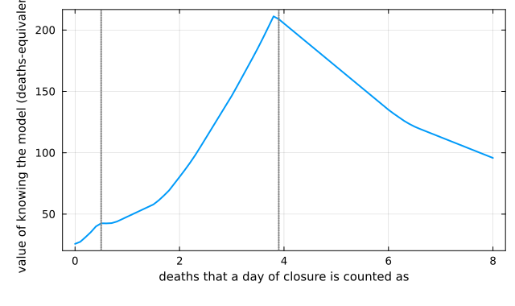

Seventeen models of reopening, and what knowing the right one is worth (Shea et al. 2023)
Simon Frost
- About this case study
- The paper
- The pooled projections
- What each model says
- What knowing the right model is worth
- The trade-off
- What was not reproduced
- What to take from this
About this case study
This case study replicates a published analysis and then adds to it. The paper asked 17 models for projections of four ways of reopening workplaces during the COVID-19 pandemic, pooled them, and ranked the interventions. Its pooled results are reproduced here from the models’ submissions, which the paper publishes. The paper contains no value-of-information analysis: the second half of this vignette, on what it would be worth to know which model is right, is this package’s own, computed on the paper’s data. The comparisons are in the test suite (test/fixtures/replications/shea2023_covid_models.json, test/test_replications.jl).
The paper
Shea, Borchering, Probert, Howerton, Bogich, Li, van Panhuis, Viboud and others (2023), “Multiple models for outbreak decision support in the face of uncertainty”, Proceedings of the National Academy of Sciences 120(18):e2207537120, doi:10.1073/pnas.2207537120, CC BY 4.0. The input is its Dataset S2, the second-round submissions of every model. The authors’ code repository is under the GPL and nothing is taken from it; the pooling below is written from the description in the article.
Decision. In a generic US county of 100,000 people on 15 May 2020, with schools closed: when to reopen non-essential workplaces. Projections run to 15 November.
Actions. Keep workplaces closed throughout; reopen when cases fall below 5% of the peak (5percent); reopen two weeks after the peak (2weeks); or reopen at once (open). Reopening at once is the option without restrictions and is the baseline.
States. Which of the 17 models is right. The 16 groups have equal weight, and the group that sent two models (G.1, G.2) has its weight split between them, as in the paper.
Outcomes. Five, each as the models projected it: cumulative infections, cumulative deaths, the peak number of hospital beds occupied, the probability of an outbreak, and the days that workplaces are closed. Each model gave a distribution for each, as 100 quantiles. No outcome is valued in money, here or in the paper.
using DecisionAnalysis
include(joinpath("..", "_common.jl"))
using Plots
const INTERVENTIONS = ["closed", "5percent", "2weeks", "open"]
const ACTIONS = Symbol.(INTERVENTIONS)
# Dataset S2, from the fixture of the test suite: one line for each model, intervention
# and outcome, with the values at consecutive quantile levels.
fixture = joinpath("..", "..", "test", "fixtures", "replications",
"shea2023_covid_models.json")
pattern = r"^\s*\[\"([^\"]+)\",\"([^\"]+)\",\"([^\"]+)\",(\d+),(.*)\],?\s*$"
lines = [m for m in match.(pattern, readlines(fixture)) if m !== nothing]
@assert length(lines) == 17 * 4 * 5
series = Dict((m[1], m[2], m[3]) => (parse(Int, m[4]),
parse.(Float64, strip.(split(m[5], ','), '"')))
for m in lines)
const MODELS = sort(unique(String(m[1]) for m in lines))
weight = Dict(m => (startswith(m, "G") ? 1 // 2 : 1 // 1) // 16 for m in MODELS)
length(MODELS), sum(values(weight))(17, 1//1)The pooled projections
The paper pools the models by averaging their distribution functions with those weights (a linear opinion pool). Here a submission’s distribution function is taken as linear between the quantiles it gives.
function cdf(first_level, values, x)
x < values[1] && return 0.0
x >= values[end] && return 1.0
j = searchsortedlast(values, x)
lower, upper = values[j], values[j + 1]
p = (first_level + j - 1) / 100
return upper > lower ? p + (x - lower) / (upper - lower) / 100 : p + 1 / 100
end
pooled(outcome, intervention, x) = sum(weight[m] * cdf(series[(m, intervention, outcome)]..., x)
for m in MODELS)
function pooled_quantile(outcome, intervention, q)
lo = minimum(first(last(series[(m, intervention, outcome)])) for m in MODELS)
hi = maximum(last(last(series[(m, intervention, outcome)])) for m in MODELS)
for _ in 1:100
mid = (lo + hi) / 2
pooled(outcome, intervention, mid) < q ? (lo = mid) : (hi = mid)
end
return hi
end
median_of(outcome, intervention) = pooled_quantile(outcome, intervention, 0.5)
infections = Dict(i => median_of("cumu_infections", i) for i in INTERVENTIONS)
fewer(i) = 100 * (1 - infections[i] / infections["open"])
md_table(["pooled quantity", "paper", "this package"],
[["median infections, open", "48,100", round(Int, infections["open"])],
["median infections, closed", "8,527", round(Int, infections["closed"])],
[" reduction, closed against open (%)", 82, fewer("closed")],
[" reduction, 5percent against open (%)", 66, fewer("5percent")],
[" reduction, 2weeks against open (%)", 46, fewer("2weeks")],
["median deaths, closed", 73, median_of("cumu_deaths", "closed")],
[" lower quartile", 12, pooled_quantile("cumu_deaths", "closed", 0.25)],
[" upper quartile", 228, pooled_quantile("cumu_deaths", "closed", 0.75)],
["median days closed, closed", 184, median_of("days_closed", "closed")],
["median days closed, 5percent", 129, median_of("days_closed", "5percent")],
["median days closed, 2weeks", 96, median_of("days_closed", "2weeks")],
["chance of more than 200 beds, 2weeks (%)", 34,
100 * (1 - pooled("peak_hosp", "2weeks", 200.0))],
["chance of more than 200 beds, closed (%)", 11,
100 * (1 - pooled("peak_hosp", "closed", 200.0))]]; digits=1)| pooled quantity | paper | this package |
|---|---|---|
| median infections, open | 48,100 | 48101 |
| median infections, closed | 8,527 | 8530 |
| reduction, closed against open (%) | 82 | 82.3 |
| reduction, 5percent against open (%) | 66 | 65.7 |
| reduction, 2weeks against open (%) | 46 | 45.5 |
| median deaths, closed | 73 | 73.5 |
| lower quartile | 12 | 11.4 |
| upper quartile | 228 | 228 |
| median days closed, closed | 184 | 184 |
| median days closed, 5percent | 129 | 129 |
| median days closed, 2weeks | 96 | 95.6 |
| chance of more than 200 beds, 2weeks (%) | 34 | 33.4 |
| chance of more than 200 beds, closed (%) | 11 | 10 |
The pooled results are the paper’s, to within the interpolation between quantiles: three infections in 8,527, and one percentage point in the chance of exceeding the county’s 200 hospital beds.
md_table(["outcome (pooled median)", "closed", "5percent", "2weeks", "open"],
[Any[label, (median_of(outcome, i) for i in INTERVENTIONS)...]
for (label, outcome) in (("infections", "cumu_infections"),
("deaths", "cumu_deaths"),
("peak hospital beds", "peak_hosp"),
("days closed", "days_closed"))]; digits=0)| outcome (pooled median) | closed | 5percent | 2weeks | open |
|---|---|---|---|---|
| infections | 8530 | 16513 | 26208 | 48101 |
| deaths | 73 | 119 | 199 | 352 |
| peak hospital beds | 36 | 60 | 88 | 232 |
| days closed | 184 | 129 | 96 | 0 |
For every health outcome the order is the same, closed best and open worst, and for days closed it is the reverse: the paper’s “strong tradeoff between public health and economic outcomes”.
One number that is not reproduced
The paper reports that under closed “the probability of an outbreak was high (aggregate median, 71%)”. The submissions for this outcome are of different kinds: some models give one probability, some a list of zeros and ones, one for each simulated run, and one a distribution of probabilities. A median of the pooled values then depends on how the zeros and ones are interpolated. Taking each model’s probability as the mean of what it sent:
mean_of(values) = length(values) == 1 ? values[1] :
sum((values[k] + values[k + 1]) / 2 for k in 1:(length(values) - 1)) /
(length(values) - 1)
chance = sort([(mean_of(last(series[(m, "closed", "prob_outbreak")])), m) for m in MODELS])
md_table(["model", "probability of an outbreak, closed", "cumulative weight"],
[Any[m, p, Float64(sum(weight[x] for (q, x) in chance if q <= p))]
for (p, m) in chance]; digits=3)| model | probability of an outbreak, closed | cumulative weight |
|---|---|---|
| D | 0 | 0.156 |
| G.2 | 0 | 0.156 |
| O | 0 | 0.156 |
| M | 0.01 | 0.219 |
| G.1 | 0.03 | 0.25 |
| B | 0.106 | 0.312 |
| C | 0.136 | 0.375 |
| K | 0.174 | 0.438 |
| H | 0.227 | 0.5 |
| F | 0.415 | 0.562 |
| J | 0.746 | 0.625 |
| E | 0.781 | 0.688 |
| L | 0.975 | 0.75 |
| A | 0.999 | 0.812 |
| I | 1 | 1 |
| N | 1 | 1 |
| P | 1 | 1 |
sum(weight[m] * p for (p, m) in chance)0.47394622284252286is the weighted mean of the models’ probabilities. Half of the weight is on models that put the probability at 0.23 or below. The published 71% is not what the models, taken one by one, say.
What each model says
A payoff table needs one number for each intervention and model. It is taken here as the mean of the model’s projected distribution.
means(outcome) = [mean_of(last(series[(m, i, outcome)])) for i in INTERVENTIONS, m in MODELS]
const STATES = Symbol.("model_", MODELS)
prior = FiniteBelief(STATES, [weight[m] for m in MODELS])
# Fewer is better, so the payoff is minus the outcome.
problem(costs) = DecisionProblem(PayoffTable(ACTIONS, STATES, -costs), prior; baseline=:open)
best_in(costs) = [INTERVENTIONS[argmin(view(costs, :, j))] for j in eachindex(MODELS)]
outcomes = (("infections", "cumu_infections"), ("deaths", "cumu_deaths"),
("peak hospital beds", "peak_hosp"), ("days closed", "days_closed"))
md_table(["outcome", "models in which closed is best", "5percent", "2weeks", "open"],
[Any[label, (count(==(i), best_in(means(outcome))) for i in INTERVENTIONS)...]
for (label, outcome) in outcomes])| outcome | models in which closed is best | 5percent | 2weeks | open |
|---|---|---|---|---|
| infections | 15 | 2 | 0 | 0 |
| deaths | 14 | 3 | 0 | 0 |
| peak hospital beds | 15 | 2 | 0 | 0 |
| days closed | 0 | 0 | 0 | 17 |
The paper says that “the rankings of interventions from the individual models are generally consistent with each other”. They are, but not wholly: for deaths, three of the 17 models put reopening at 5% of the peak ahead of staying closed.
deaths = means("cumu_deaths")
md_table(["model", "deaths if closed", "deaths if 5percent", "difference"],
[Any[m, deaths[1, j], deaths[2, j], deaths[1, j] - deaths[2, j]]
for (j, m) in enumerate(MODELS) if deaths[2, j] < deaths[1, j]]; digits=1)| model | deaths if closed | deaths if 5percent | difference |
|---|---|---|---|
| I | 292.7 | 292.7 | 0.1 |
| M | 100.8 | 6.2 | 94.6 |
| P | 1938 | 1620.5 | 317.5 |
What knowing the right model is worth
This section is not in the paper. With the models as states, the expected value of perfect information is what would be gained, on average, by learning which model is right before choosing.
md_table(["outcome", "choice now", "expected outcome", "gain over reopening at once",
"value of knowing the model", "% of the expected outcome"],
map(outcomes) do (label, outcome)
p = problem(means(outcome))
now = -act_now_value(p)
return Any[label, first_choice(decide(p, MaxExpectedUtility())), now,
maximum(expected_gain_over_baseline(p)), evpi(p),
now == 0 ? 0.0 : 100 * evpi(p) / now]
end; digits=1)| outcome | choice now | expected outcome | gain over reopening at once | value of knowing the model | % of the expected outcome |
|---|---|---|---|---|---|
| infections | closed | 18697.2 | 30856.2 | 961.8 | 5.1 |
| deaths | closed | 301.7 | 495.3 | 25.8 | 8.5 |
| peak hospital beds | closed | 80.6 | 225.9 | 8.2 | 10.2 |
| days closed | open | 0 | 0 | 0 | 0 |
For each health outcome the choice now is to stay closed, and knowing the model would change it only in the two or three models that prefer the 5% rule. That is worth about 26 deaths in the county, under a tenth of the expected toll: small beside the 495 deaths that separate staying closed from reopening at once, but not nothing. For days closed every model agrees, so there is nothing to learn.
A manager who does not trust the weights can look at the worst case instead:
p = problem(deaths)
R = regret_table(p).R
md_table(["intervention", "expected deaths", "largest regret over the 17 models (deaths)"],
[Any[i, -aggregate(Expectation(), p)[k], maximum(R[k, :])]
for (k, i) in enumerate(INTERVENTIONS)]; digits=0)| intervention | expected deaths | largest regret over the 17 models (deaths) |
|---|---|---|
| closed | 302 | 317 |
| 5percent | 329 | 562 |
| 2weeks | 452 | 1400 |
| open | 797 | 2937 |
first_choice(decide(p, MinimaxRegret())):closedThe trade-off
The paper asks “how much economic activity might the decision maker be willing to forgo to gain public health improvements of a given magnitude?” and leaves the answer to the decision maker. Suppose a day of closure is counted as worth r deaths. No value of r is proposed here; it is swept to show where the decision turns, and where the models start to matter.
tradeoff(r) = problem(means("cumu_deaths") .+ r .* means("days_closed"))
rates = 0:0.1:8
sweep = [(first_choice(decide(tradeoff(r), MaxExpectedUtility())), evpi(tradeoff(r)))
for r in rates]
switches = [(rates[k], first(sweep[k])) for k in eachindex(rates)
if k == 1 || first(sweep[k]) != first(sweep[k - 1])]
md_table(["from this many deaths for a day of closure", "choice"],
[Any[r, a] for (r, a) in switches]; digits=1)| from this many deaths for a day of closure | choice |
|---|---|
| 0 | closed |
| 0.5 | 5percent |
| 3.9 | open |
plot(rates, last.(sweep); xlabel="deaths that a day of closure is counted as",
ylabel="value of knowing the model (deaths-equivalent)", legend=false)
vline!([r for (r, _) in switches[2:end]]; linestyle=:dot, color=:grey)
The dotted lines are where the choice changes. For a single health outcome the models nearly agree, and knowing the right one is worth little. Once closure has a price the choice depends on how many deaths each intervention saves, on which the models differ widely, and the value of knowing the right model is several times larger. That is the paper’s own remark, that models agree on ranking far more than on magnitude, turned into a number.
What was not reproduced
- The pooled median probability of an outbreak, as explained above.
- The first round of modelling and its comparison with the second (the paper’s Fig. 2), and the comparison with deaths reported in real counties (Fig. 3). The case study uses the final projections only.
What to take from this
- The paper’s pooled projections follow from its published submissions: staying closed cuts median infections by 82% against reopening at once, at 184 days of closure.
- The paper does not value information. On its data, knowing which model is right is worth about 26 deaths in a county of 100,000 if deaths alone count, because three models of 17 prefer a different intervention.
- That value grows several-fold when days of closure are traded against deaths, since the models disagree on magnitudes much more than on ranks.
- Every quantity is in the models’ own units, beside the baseline of reopening at once; the rate of exchange between deaths and days of closure is swept, not chosen.